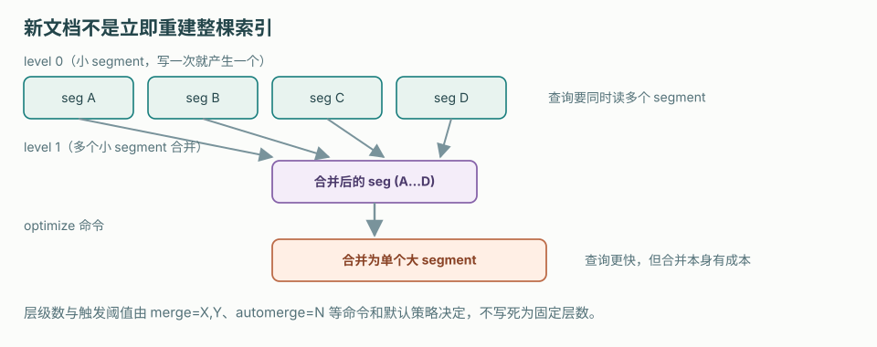

FTS 全文搜索：倒排索引、segment 与 FTS5
LIKE 与 MATCH 差在哪？从 segment 与 doclist、分词器边界开始，理解 FTS 索引为何能支持短语与排序，以及 FTS5 与 FTS3/4 的真实差异。
1. 为什么 LIKE '%关键词%' 不够？
想找出所有包含“SQLite 性能优化”的文章，最直接的办法是 WHERE body LIKE '%SQLite%性能%优化%'。这条 SQL 有两个问题：它必须逐行读取并比较整段文本，成本随行数线性增长；而且 % 之间的通配符无法表达“这三个词按此顺序相邻”，更谈不上按相关性排序。LIKE 解决的是“子串是否出现”，不是“哪些文档最匹配”。

FTS 是 SQLite 的扩展模块，通过 CREATE VIRTUAL TABLE … USING fts3/fts4/fts5 建表。它内部维护一份独立的倒排索引，所以同样的检索可以走 … WHERE docs MATCH '性能优化'，由索引直接给出候选文档。参考 FTS3/FTS4 官方文档 与 FTS5 官方文档。
unicode61 分词器自 3.7.13（2012-06-11）起可用。2. FTS 索引到底是什么结构？
FTS3/FTS4 的倒排索引不是一棵全局 B-Tree，而是一组 B-Tree segment。每个 segment 的键是词条（term），键对应的值是 doclist：它由零到多个条目组成，每个条目包含一个 docid 和该词在该文档中的词位置列表。正是位置列表让短语查询和短语邻近判断成为可能——只存“出现过”是不够的。

merge=X,Y、automerge=N 等命令与默认策略共同决定，不是一个固定层数。这种“先追加、再合并”的结构解释了常见现象：批量写入时查询会同时命中许多小 segment，因此先慢后快；大量写入后做一次 optimize 可以合并索引、让查询更快，但合并本身要花时间和临时空间。
| 层次 | 含义 |
|---|---|
| segment | 一棵以词条为键的 B-Tree，属于某个合并层级 |
| doclist 条目 | 一个 docid 加上该词在该文档中的词位置列表 |
| 合并层级 | 多个小 segment 归并成更大的 segment，减少查询需读取的 segment 数 |
3. 分词器决定“词”的边界
倒排索引的键来自分词器（tokenizer）。建表时用 tokenize= 指定，省略则默认 simple：按空白与标点切分并转小写，只比较 ASCII。SQLite 自带四类：simple、porter（英语词干提取，使 running 匹配 run）、unicode61 与 icu。
CREATE VIRTUAL TABLE papers USING fts4(author, doc, tokenize=porter);
-- 组合使用（第一个为主分词器，后面为附加处理）
CREATE VIRTUAL TABLE notes USING fts4(body, tokenize="porter unicode61");unicode61 做 Unicode 大小写折叠并识别 Unicode 空白与标点，但它不会把中文按词切分：没有空格的中文文本通常被切成单字或连续块。需要真正的汉语分词时，应通过扩展接口注册自定义分词器，而不是指望内置分词器。
unicode61 自 SQLite 3.7.13（2012-06-11）起可用；simple、porter、icu 与具体分词行为详见官方文档的“Tokenizers”一节。分词结果直接决定了哪些查询能命中，因此实验时要把分词器一并记录。4. MATCH 查询与辅助函数
FTS 表用 MATCH 运算符驱动查询。列名写在左侧时只在该列内匹配，表名写在左侧则跨所有被索引列。OR、AND、NOT、双引号短语、* 前缀都在查询字符串内部解析。
CREATE VIRTUAL TABLE docs USING fts4(title, body);
SELECT * FROM docs WHERE body MATCH 'SQLite';
SELECT * FROM docs WHERE body MATCH 'SQLite OR 性能';
SELECT * FROM docs WHERE body MATCH '"数据库引擎"'; -- 短语
SELECT * FROM docs WHERE body MATCH 'SQL*'; -- 前缀
SELECT * FROM docs WHERE docs MATCH 'SQLite NOT Oracle';
-- FTS3/4 辅助函数
SELECT highlight(docs, 0, '<b>', '</b>'), offsets(docs), matchinfo(docs)
FROM docs WHERE body MATCH 'SQLite';… WHERE rowid IN (SELECT docid FROM docs WHERE body MATCH 'x') 时，外层 rowid IN 可能让计划绕过全文索引、退化成逐行检查。让 MATCH 直接出现在 WHERE 中，由它驱动索引；具体计划仍受查询与 SQLite 版本影响。5. FTS5 是另一套模块，不是 FTS4 的小改
FTS5（3.9.0 引入）与 ext/fts3/fts3.c 是两套独立实现：索引格式、tokenizer 选项与查询函数都不同，不能把 FTS4 的行为直接套到 FTS5 上。FTS5 常见点：一个内建的 rank 列（默认用 BM25 计算），用 ORDER BY rank 即可按相关性排序；prefix='2,3' 建前缀索引；tokenize=ngram 做 N-gram；content= 指向外部内容表以省去重复存储。
title^10 语法给列加权”不成立：FTS5 的列权重是作为 bm25(table, w1, w2, …) 的参数传入的。其二，FTS5 的辅助函数与 FTS3/4 不相同（例如 snippet()、bm25()），不要混用。请以 FTS5 官方文档 为准。CREATE VIRTUAL TABLE docs5 USING fts5(title, body, tokenize='unicode61');
SELECT title, rank FROM docs5 WHERE docs5 MATCH 'index plan' ORDER BY rank;
-- 给 title 更高权重（参数顺序对应被索引列）
SELECT title, bm25(docs5, 10.0, 1.0) AS score
FROM docs5 WHERE docs5 MATCH 'index' ORDER BY score;6. 可运行实验
examples/21_fts.py 只用 Python 标准库 sqlite3，先读 PRAGMA compile_options 判断当前构建是否含 FTS5/FTS4，再验证四条可固定断言：单词命中数、短语查询、前缀查询以及 ORDER BY rank 能按相关性返回行。
python3 examples/21_fts.py
# fts5=True fts4=True sqlite=3.54.0
# PASS: fts5 match/phrase/prefix/rank verified; rank_order=[...]
# 若构建不含 FTS5，脚本打印 SKIPPED 并返回 0，不把缺失当成通过。实验有意不写死版本号（上面输出中的 3.54.0 只是本次环境），也不把命中数当成跨版本不变量：数据、分词器和 build 选项都会改变结果。FTS 并非核心库必然开启，编译选项 SQLITE_ENABLE_FTS3/SQLITE_ENABLE_FTS4/SQLITE_ENABLE_FTS5 决定它是否存在。
可重复练习
- 把
tokenize从simple换成porter，观察MATCH 'run'能否命中 running； - 插入相同数据但不建前缀索引，比较
MATCH 'data*'的结果是否不变； - 用
PRAGMA compile_options记录构建是否含 FTS，并解释为什么同一 SQL 在不同构建上可能报“no such module”。
自测：为什么倒排索引能支持短语查询，而 LIKE 不能？
doclist 里除了 docid 还存了每个词的位置列表，因此可以判断多个词是否在相邻位置出现；LIKE '%a%' 只回答子串是否出现，没有保留词边界与位置信息。
7. 合并、optimize 与一致性
FTS3/FTS4 提供一组写入特殊命令（把它们当作插入索引表自身来执行）：
| 命令 | 作用 |
|---|---|
INSERT INTO t(t) VALUES('optimize') | 把全部 segment 合并成一个，查询更快，但消耗时间与临时空间 |
INSERT INTO t(t) VALUES('rebuild') | 依据内容重建整份索引 |
INSERT INTO t(t) VALUES('integrity-check') | 校验索引与内容是否一致 |
INSERT INTO t(t) VALUES('merge=X,Y') | 合并策略参数：Y 取值须在 2–16，推荐 8 |
INSERT INTO t(t) VALUES('automerge=N') | 调整自动合并阈值 |
关键一致性事实：FTS 表与外部的“真正内容表”不会自动同步。若用触发器或在应用层维护两份数据，就必须保证两者同时更新；用 content= 指向外部表时，索引与外部内容的一致性是使用者的责任。rebuild 能修复脏索引，但它是重建，不是实时同步。
下一章从 FTS 的独立索引结构转向另一类“自动维护”的索引优化：表达式索引与自修复索引。章节记录均以官方文档与可运行实验为边界，内部数据结构与函数名随源码版本变化。
原始资料与版本边界
本章的版本信息、索引结构与命令语义来自 SQLite 官方文档；图中的 segment 层级、docid 与位置为教学示意，不是某次具体 trace。中文分词与自定义分词器为扩展主题，需以扩展自身文档为准。
- SQLite FTS3 and FTS4 Extensions · SQLite 官方
- SQLite FTS5 Extension · SQLite 官方
- FTS5 bm25() 函数 · SQLite 官方
- Compile-time Options (SQLITE_ENABLE_FTS*) · SQLite 官方